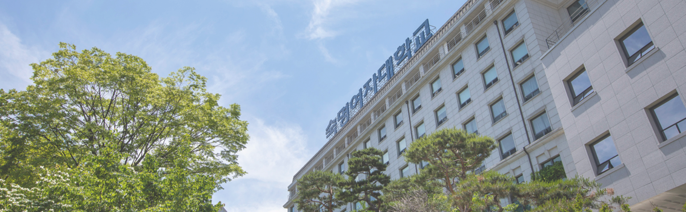
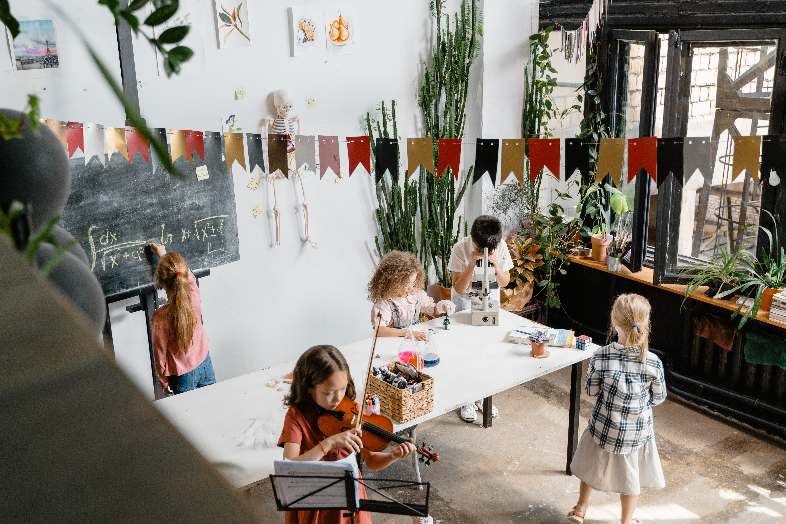
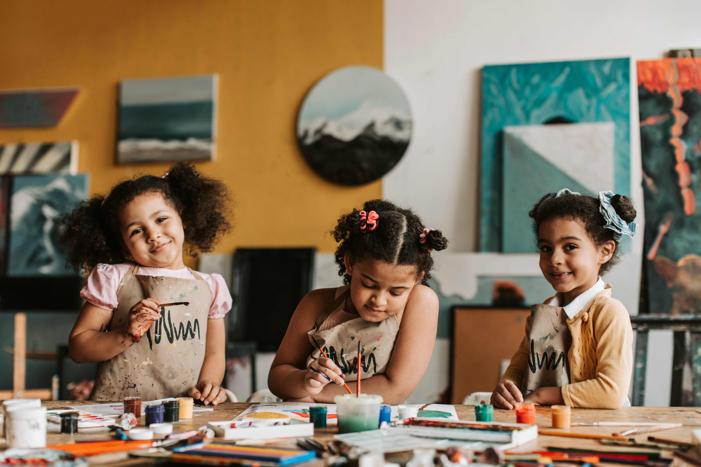

- 문화예술교육학과 박사과정
-
일반대학원 박사과정 문화예술교육학과에서는 문화예술과 교육의 통합된 시각을 바탕으로 풍부한 예술적 감수성과 문화적 창조성을 지는 문화예술교육전문가와 연구자를 양성합니다. 문화예술교육학과에서는 학교문화예술교육 (영유아기부터 초·중·고등학교)에 중점을 두며, 통섭학문의 관점에 근거하여 문화예술교육의 이론, 원리와 방법 그리고 현장을 연구합니다.

- +GO HOME
- 영유아교육학과 석사과정
-
특수대학원 영유아교육학과에서는 영유아교육과와 관련된 최신 전문지식과 이론 및 실제,
그리고 정보에 대한 모든 교육자원을 원격교육으로 제공하고 있습니다.
이를 통해 21세기 사회에서 요구하는 전문적이고 유능한 영유아교육전문가를 양성하기 위해 설립된 교육학 석사학위 과정입니다.
- +GO HOME